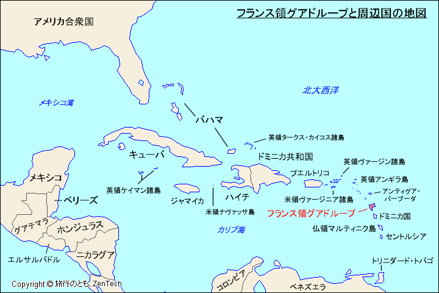

グアドループはカリブ海に位置し、アンティル諸島の一部です。主にバッセテール島とグランドテール島から成り、多くの小島が点在しています。
グアドループはフランスの海外県で、アメリカ大陸の東側に位置します。主要な都市はバスティール（Basse-Terre）で、観光地としても人気です。
人間の活動は自然環境に依存しています。農業（バナナ、サトウキビ）や観光業は自然の恵みを活かしており、持続可能な利用が求められています。
グアドループ内では、各島や地域が観光業、農業、漁業などを通じて相互に依存しています。この相互作用が地域の経済を支えています。
グアドループはフランスの一部として、カリブ地域の文化や経済に深く関わっています。地域住民は独自の文化を持ちつつ、フランス本土との結びつきも強いです。
グアドループでは持続可能な開発目標（SDGs）に向けた取り組みが進められています。美しい自然を守るために、定期的にゴミ拾いをしています。